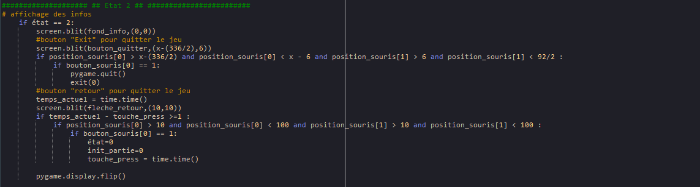

Dans cette section je vais vous expliquer le code.
Dans un premier temps nous devons appeler toutes nos différentes librairies que nous utilisons pour ce projet
On définie toutes nos variables et on importe toutes nos textures.

On viens ensuite créer toutes nos fonctions que nous appelerons plus tard pour simplifier le code.
On initialise la boucle principale du code.
On paramètre notre état 0 qui correspond à notre menu. Puis on configure les choix de TANKS
pour chaque joueur.
On paramètre nos différents boutons.
On passe ensuite à l'état 1 qui correspond au jeu puis on charge les tanks et la map.
Puis on remets nos differents boutons.
Cette partie du code permet au tank d'avoir une texture différente en fonction des dégats reçu et de la vie restante.
On crée les déplacements et les tirs pour le J1, et le code pour le J2 est le même, seulement les variables changent.
Ici on code l'état 2, ce qui correspond au menu info.

L'état 3 correspond au menu quand le joueur 1 gagne. Il y a aussi un état 4 lorsque le joueur 4 gagne, le code est
le même que pour l'état 3 mais uniquement les variables changent.
Voila l'entiereté du code, il n'est pas si dur à comprendre mais un peu long.
© ROUSEAU Melvin - Toute reproduction interdite - Mentions légales